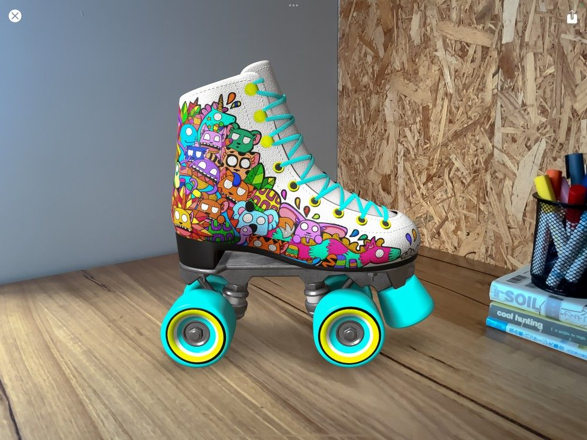

📖 Đã dịch sang tiếng Việt. Thuật ngữ chuyên môn giữ tiếng Anh — rê chuột để xem nghĩa (tooltip).
3D
Chỉnh sửa họa tiết 2D, vẽ xuyên qua một vật thể 3D, hoặc điều chỉnh ánh sáng rồi đưa nó vào đời thực bằng AR.
3D Actions (hành động 3D)
Khác với các Actions khác trong menu này, 3D Actions chỉ xuất hiện khi làm việc trên tệp 3D OBJ hoặc USDZ.
Để truy cập 3D Actions, hãy mở một tệp 3D OBJ hoặc USDZ từ Gallery → chạm Actions → 3D.
Show 2D Texture (hiển thị họa tiết 2D)
Mở bung một vật thể 3D thành bản đồ họa tiết 2D phẳng để phác màu nền, chỉnh sửa lại bản vẽ 3D, xử lý chi tiết, v.v.
Mở một tệp OBJ hoặc USDZ trong Gallery, chạm Actions → 3D → công tắc Edit 2D texture.
Show 2D texture sẽ mở bung một vật thể 3D để hiện Base Layer dưới dạng bản đồ họa tiết 2D phẳng. Bản đồ họa tiết 2D có thể trông rất trừu tượng, nhưng lại rất hữu ích để thêm chi tiết, họa tiết hoặc phủ những vùng lớn màu nền. Vẽ trên bản đồ họa tiết 2D hoạt động giống hệt như vẽ 2D chuẩn trong Procreate.
Tắt Show 2D texture để quay lại chế độ xem 3D của vật thể.
Để xem giải thích đầy đủ về cách Layers hoạt động, hãy xem phần Layers trong chương 3D của cẩm nang này.
Paint Through Mesh (vẽ xuyên qua mesh)
Vẽ xuyên qua mesh rất tiện khi bạn muốn vẽ một phần của vật thể 3D mà một vật thể khác ở mesh khác lại cản trở.
Mở một tệp OBJ hoặc USDZ trong Gallery, chạm Actions → 3D → công tắc Paint through mesh.
Bật Paint through mesh để nét cọ của bạn bỏ qua và đi xuyên qua mọi mesh không được chọn. Điều này có thể giúp vẽ những vùng khó tiếp cận trong mô hình, và vẽ một vật thể 3D khi một vật thể khác nằm ngay phía trước nó.
Tắt Paint through mesh để quay lại chế độ 3D Painting chuẩn.
Edit Lighting & Environment (chỉnh sửa ánh sáng & môi trường)
Truy cập Lighting Studio cho một vật thể 3D để điều chỉnh và trình bày vật thể trong ánh sáng đẹp nhất.
Mở một tệp .OBJ hoặc .USDZ trong Gallery, chạm Actions → 3D → Edit Lighting.
Edit Lighting mở Procreate Lighting Studio. Ở đây bạn có thể thêm đèn và điều chỉnh sắc độ, độ bão hòa cùng cường độ của chúng. Bạn cũng có thể thêm ánh sáng môi trường. Để xem giải thích đầy đủ về cách Lighting Studio hoạt động, hãy xem phần Lighting Studio trong chương 3D của cẩm nang này.
View in AR (xem trong AR)
Lấy một vật thể 3D đã vẽ và đặt nó vào thế giới thực bằng thực tế tăng cường.
Mở một tệp OBJ hoặc USDZ trong Gallery, chạm Actions → 3D → View in AR. Lần đầu tiên bạn làm việc này, Procreate sẽ xin quyền dùng camera iPad. Chọn No sẽ khiến bạn không thể dùng tính năng này.
Sau khi bạn đã chọn View in AR, Procreate sẽ truy cập camera và đặt vật thể lên bề mặt phẳng đầu tiên mà camera phát hiện được. Bạn có thể cần di chuyển camera quanh một khu vực trước khi Procreate phát hiện được bề mặt để đặt vật thể.
Nếu bạn muốn tắt View in AR hoặc di chuyển vật thể và đặt nó lên một bề mặt khác, hãy chạm X ở góc trên bên trái của cửa sổ AR. Để đặt vật thể ở chỗ khác, chạm lại View in AR.
Để xuất vật thể trong chế độ View in AR, hãy chạm biểu tượng Share ở góc trên bên phải của cửa sổ. Để xem giải thích đầy đủ về việc xuất tác phẩm 3D, hãy xem phần Share trong chương Actions của cẩm nang này.

Still have questions?
If you didn't find what you're looking for, explore our video resources on YouTube or contact us directly. We’re always happy to help.